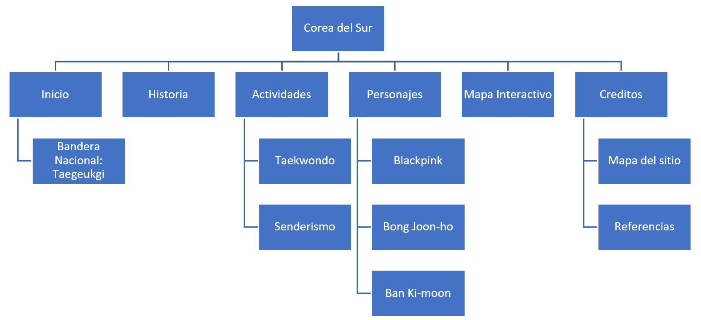

Inicio
Historia
Actividades
Personajes
Creditos
Mapa del sitio

Referencias
Imágenes tomadas de:
https://www.countryflags.com/en/south-korea-flag-icon.html
https://upload.wikimedia.org/wikipedia/commons/thumb/2/21/Korea_Banner_2.jpg/2560px-Korea_Banner_2.jpg
https://en.wikipedia.org/wiki/South_Korea#/media/File:Flag_of_South_Korea.svg
http://koreanhistoricaldramas.com/gojoseon/
https://commons.wikimedia.org/wiki/File:Royal_flag_of_Goryeo_(Bong-gi)_(Fringeless).svg
http://nationalclothing.org/asia/70-korea/361-history-of-korean-hanbok-evolution-of-hanbok-during-the-last-2,000-years.html
https://londonkoreanlinks.net/2018/02/15/seminar-yeoju-and-king-sejong-the-great/
https://lacabezallena.com/diseno/la-bandera-de-corea/
https://www.asiatimes.com/2019/05/article/korea-takes-home-world-taekwondo-titles/
https://news.abs-cbn.com/entertainment/02/07/19/koreas-blackpink-to-make-us-television-debut
Textos tomados de:
https://es.wikipedia.org/wiki/Corea_del_Sur
https://es.wikipedia.org/wiki/Historia_de_Corea_del_Sur
https://es.wikipedia.org/wiki/Taekwondo
https://es.wikipedia.org/wiki/Blackpink
https://es.wikipedia.org/wiki/Ban_Ki-moon
https://en.wikipedia.org/wiki/Bong_Joon-ho
http://spanish.korea.net/NewsFocus/Society/view?articleId=120892

{kind=link}
{kind=link}
_(Fringeless).svg){kind=link}